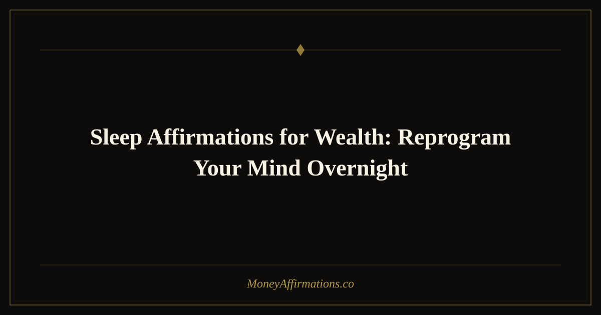

Sleep Affirmations for Wealth: Reprogram Your Mind Overnight

The thoughts you carry into sleep do not disappear when your eyes close. They become the emotional atmosphere your subconscious mind rests inside all night. If the last thoughts of the day are worry about bills, regret about spending, or fear that you are falling behind, your nervous system goes to bed in scarcity. Sleep affirmations for wealth offer a gentler ending.
Used before bed, these affirmations help your body soften around the subject of money. They give the subconscious mind language of safety, worthiness, trust, and abundance during the hours when the conscious mind is quiet. This does not mean you wake up magically wealthy. It means you wake up less entangled with fear and more available to the ideas, choices, and confidence that wealth requires. Night after night, that shift becomes meaningful.
What are sleep affirmations for wealth?
Sleep affirmations for wealth are calming, present-tense statements repeated before bed to influence the subconscious beliefs that shape your financial behavior. They are usually softer than daytime affirmations because the goal is not to energize you into action. The goal is to relax your system into trust.
Before sleep, the brain naturally moves into slower wave states associated with memory consolidation, emotional processing, and heightened suggestibility. That makes bedtime a powerful moment for repeating beliefs you want to strengthen. Wealth affirmations used at night can help dissolve old money fears, support a sense of financial safety, and make abundance feel less like something you chase and more like something your identity can hold. The more peaceful the repetition, the more deeply it tends to land.
25 sleep affirmations for wealth
- As I sleep, my mind relaxes into wealth, safety, and abundance.
- I release every money worry from today and trust that I am supported.
- My subconscious mind is open to new beliefs about prosperity.
- Wealth feels safe, natural, and peaceful in my life.
- I fall asleep knowing that money can flow to me with ease.
- Tonight, I let go of scarcity and rest in abundant trust.
- My body relaxes, my mind quiets, and my wealth identity strengthens.
- I am worthy of prosperity even while I rest.
- Sleep restores my energy and prepares me for new financial opportunities.
- I trust life to support me in visible and invisible ways.
- My dreams are filled with possibility, guidance, and abundance.
- I forgive myself for any money mistakes and rest in peace.
- Every night, my old financial fears dissolve more completely.
- I am safe to receive more money than I have ever received before.
- My wealth grows through calm decisions, inspired ideas, and consistent action.
- I sleep deeply knowing that abundance is already working in my favor.
- My nervous system accepts prosperity as normal and natural.
- I deserve rest, wealth, comfort, and financial peace.
- As I sleep, my mind releases lack and welcomes limitless possibility.
- I wake tomorrow more aligned with abundance than I was today.
- Money is not a threat; money is a tool that supports my beautiful life.
- I am grateful for all I have and peaceful about all that is coming.
- My subconscious mind knows how to guide me toward wealth.
- I rest tonight in the certainty that I am provided for.
- I am wealthy in mind, wealthy in spirit, and open to wealthy results.
How to use these affirmations
The most effective bedtime practice is quiet, slow, and free from pressure. Choose three to five sleep affirmations for wealth and repeat them after you have turned off screens, dimmed the lights, and settled into bed. Say them softly, either aloud or in your mind. Let the words follow your breathing rather than forcing intensity. At night, gentleness is more powerful than effort.
If money anxiety tends to appear when you lie down, begin by placing one hand on your heart or stomach and taking five slow breaths. Then repeat your affirmations as if you are speaking to the most tender part of yourself. You are not arguing with fear. You are giving your mind a safer belief to hold while sleep does its work. For added depth, imagine the affirmation becoming true in ordinary, peaceful ways: a calm bank account review, a paid invoice, a generous opportunity, a wise decision made without panic.
The neuroscience of sleep and wealth programming
Sleep is not a passive state. While you rest, your brain performs some of its most active work — consolidating memories, regulating emotions, and reinforcing the neural pathways that shape your habitual thoughts and behaviors. This is why the beliefs and feelings you carry into sleep matter more than most people realise. They become the raw material your brain processes overnight.
During the transition from wakefulness to sleep, the brain enters what researchers call the hypnagogic state — a period of heightened suggestibility where the critical, analytical mind relaxes its guard. Repeating wealth affirmations during this window means you are speaking directly to a brain that is unusually receptive to absorbing new beliefs. This is the same window that deep relaxation and meditation practices deliberately target, and it is available to you every single night without any special technique.
Cortisol — the body's primary stress hormone — drops naturally during sleep preparation. When you combine that lowered stress state with calm, reassuring language about money, you are pairing wealth-aligned beliefs with a physical feeling of safety. Over time this creates a new association: money becomes something your nervous system connects with peace rather than threat. That shift alone can meaningfully change how you approach financial decisions during the day.
Research on memory consolidation also suggests that emotionally meaningful experiences get prioritised for deeper encoding during sleep. If your last waking thoughts carry positive feeling around prosperity — genuine gratitude, a quiet sense of safety, or gentle excitement about your financial future — those impressions are more likely to be strengthened as your brain processes the day. Sleep affirmations are not just words before bed. They are the emotional tone you set for one of the most powerful learning sessions your brain runs every night.
Tips to make them work faster
- Keep the practice screen-free. Avoid checking financial apps or social media after your affirmations, so the last impression of the day stays peaceful.
- Use a slower voice. Bedtime affirmations should feel soothing enough that your body believes them before your analytical mind evaluates them.
- Repeat one phrase until sleep. If your mind wanders, choose a single affirmation and let it become a gentle mental rhythm.
- Pair with gratitude. Name one financial blessing from the day, even if it was tiny. Gratitude gives the subconscious evidence of support.
- Practice for at least 21 nights. Sleep affirmations work best through repetition. The goal is to make financial safety feel familiar.
Frequently Asked Questions
Do sleep affirmations really work while I am asleep?
The most important part happens as you are falling asleep, when the mind is relaxed and more receptive. The words you repeat before sleep can influence the emotional material your brain processes overnight. Over time, this can soften money anxiety and strengthen beliefs that support better financial behavior during the day.
Should I listen to wealth affirmations overnight?
You can, but it is not required. Many people prefer repeating a few affirmations quietly before sleep because it feels more personal and less disruptive. If you use audio, keep it low and calming. The goal is restful subconscious reinforcement, not stimulation that interferes with deep sleep.
What if money worries get louder at night?
That is common because bedtime removes the distractions that keep worry pushed down during the day. Start with nervous-system regulation before affirmation: breathe slowly, relax your jaw, and remind yourself that no financial problem needs to be solved at that exact moment. Then choose one believable affirmation and repeat it gently until your body begins to settle.
For more statements that help wealth feel steady, natural, and safe in your life, explore the full wealth affirmations collection.